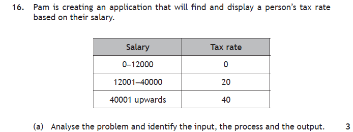
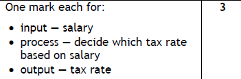
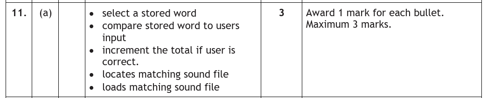

Introduction
Analysis is the first phase of the development process. Before anyone writes a single line of code, we have to work out exactly what the program is supposed to do. Get this wrong, and everything that follows is on a shakey foundation, you could write an elegant program that solves the wrong problem!
At National 5, analysis comes down to reading a problem carefully and picking out two things: the purpose of the program, and its functional requirements.
Key Terms
Purpose
The purpose answers the question: what is this program for? It's a sentence or two, written in plain English, that sums up what the program will do.
- "The purpose of the program is to calculate a student's total mark across three exams and display it."
- "The purpose of the program is to work out the total cost of a group's tickets and display the amount due."
Notice these don't mention Python, variables or anything technical — the purpose describes what the program does, not how it does it. The "how" comes later, in design.
Functional Requirements
Once the purpose is agreed, we break the problem down into its functional requirements — exactly what the program has to do. At National 5, these are organised into three categories:
| Category | Meaning | Spot it in a question by… |
|---|---|---|
| Inputs | Data the user enters | "the user enters…", "asks for…", "types in…" |
| Processes | Calculations, or new data the program creates | "calculates…", "adds…", "checks…", "counts…" |
| Outputs | Results and messages displayed | "displays…", "shows…", "prints…" |
Every program you write this year fits this pattern: data goes in, something happens to it, results come out. Analysis is just spotting those three parts before you start.
Identifying Inputs, Processes & Outputs
This is a skill, and like all skills it improves with practice. The technique: read the problem twice, then go hunting for the verbs. Words like enter and ask signpost inputs; calculate and check signpost processes; display and show signpost outputs.
Problem: A program is needed to help a student work out their total score across three exams. The student should enter their Physics, Computing and Maths marks. The program should add the scores together and display the total with a suitable message.
| Inputs | The three exam marks (Physics, Computing, Maths) |
| Processes | Add the three scores together |
| Outputs | Display the total score with a message |
Problem: Edinburgh Castle needs a program for its ticket desk. The employee enters the number of adult tickets and the number of child tickets sold for a tour group. The program calculates the total cost of the group (adult tickets cost £19.50, child tickets cost £11.50) and displays the total cost of the booking.
| Inputs | Number of adult tickets, number of child tickets |
| Processes | Calculate the total cost (adults × 19.50 + children × 11.50) |
| Outputs | Display the total cost of the booking |
One thing worth noticing: the ticket prices are not inputs. The user never types them in — they're fixed values built into the program. Only data the user enters counts as an input.
Now try it on two real past paper questions — read each question and jot down your own answer before opening the walkthrough.

How to tackle it: The question asks for one input, one process and one output — a mark for each. We work through the description in order and match each part to its category.
- Input — what does the user type in? The only piece of data the program needs from the user is their salary.
- Process — what does the program do with the salary? It decides which tax rate applies by checking the salary against the bands. Notice a process doesn't have to be arithmetic — making a decision counts.
- Output — what appears on screen? The tax rate is displayed.
Watch the trap: the table of salary bands is not an input. The user never types those numbers in — they are fixed values built into the program.

An example would be:
| Input | The user enters their salary |
| Process | Decide which tax rate applies based on the salary |
| Output | Display the tax rate |
![Past paper question: a spelling game stores 20 words, each with a sound file spoken by an actor. The program repeats 20 times: selects one of the 20 words, loads a sound file matching the selected word, plays the sound file through a speaker, asks the user to type in the word, compares the user's entry to the stored word, and informs the user if they have spelled the word correctly. When the game is over it displays the total number of words spelled correctly. Complete the table by identifying three processes from the description. The table already shows the input — user enters the word — and the outputs — play matching sound file through speaker, display whether or not the user spelled the word correctly, display the total number of correctly spelled words. 3 marks.](../resources/sdd/worked_examples/n5_frs_q2.png)
How to tackle it: This one only asks for processes — the inputs and outputs are already filled in for us. That's actually a gift: anything already listed in the table can't be an answer, so we cross those bullets off and see what's left.
- "Plays the sound file through a speaker" — already in the table as an output. Crossed off.
- "Asks the user to type in the word" — that's the input row. Crossed off.
- What remains are things the program works out internally: it selects a word, loads/locates the matching sound file, compares the entry to the stored word, and keeps count of correct answers.
Any three of those earn the marks. The counting process is easy to miss — the program must be incrementing a total for it to display the number correct at the end, even though the description never uses the word "add".

An example would be:
| Processes |
|
Requirement Sorter
Four short problems — read each description, then drag every statement into the Input, Process or Output bucket. Instant feedback explains each one, and sorting them all builds the functional requirements table.
Practice Questions
A swimming pool needs a program for its front desk. The receptionist enters the number of adult swimmers and the number of child swimmers in a group. The program calculates the total entry fee (adults £5.50, children £2.75) and displays the total cost for the group.
Analyse the problem above and identify the inputs, the process and the output.
Marking Instructions
One mark each for:
- Inputs — number of adult swimmers and number of child swimmers
- Process — calculate the total entry fee (adults × £5.50 + children × £2.75)
- Output — display the total cost for the group
The entry prices are not inputs — they are fixed values built into the program.
A quiz app stores 10 questions. The program repeats the following 10 times:
- displays a question
- asks the player to enter an answer
- compares the player's answer with the stored answer
- adds 1 to the score if the answer is correct.
When the quiz is over, the program displays the player's final score out of 10.
Identify two processes from the above description of the app.
Marking Instructions
Any two of (1 mark each): compare the player's answer with the stored answer; add 1 to the score if the answer is correct; select/choose the next question from the 10 stored.
Do not accept "displays a question" or "displays the final score" (outputs), or "enter an answer" (input).
A bus company is creating an application that will find and display a passenger's fare type based on their age.
| Age | Fare type |
|---|---|
| 0–4 | Free |
| 5–15 | Child |
| 16 upwards | Adult |
Analyse the problem above and identify the input, the process and the output.
Marking Instructions
One mark each for:
- Input — the passenger's age
- Process — decide which fare type applies based on the age
- Output — display the fare type
The age bands in the table are built into the program — the only input is the age.